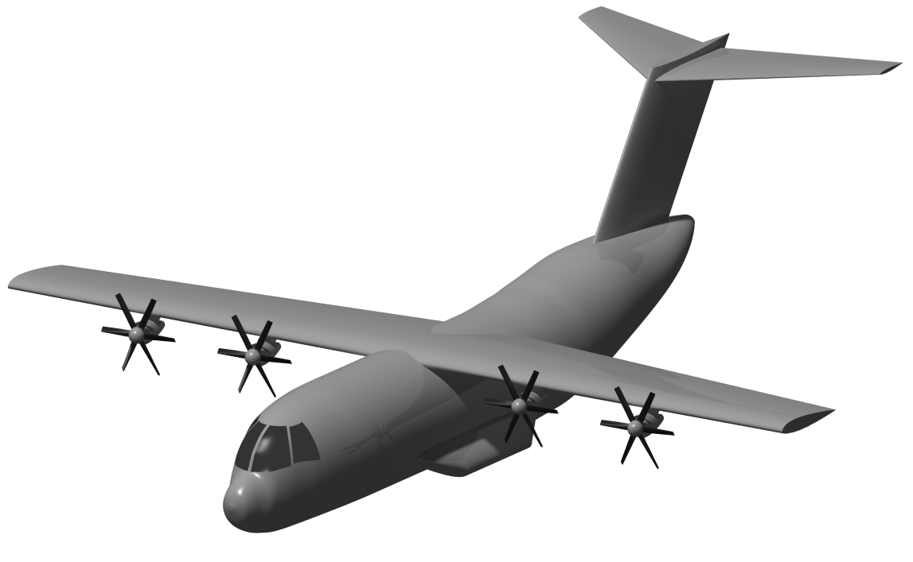
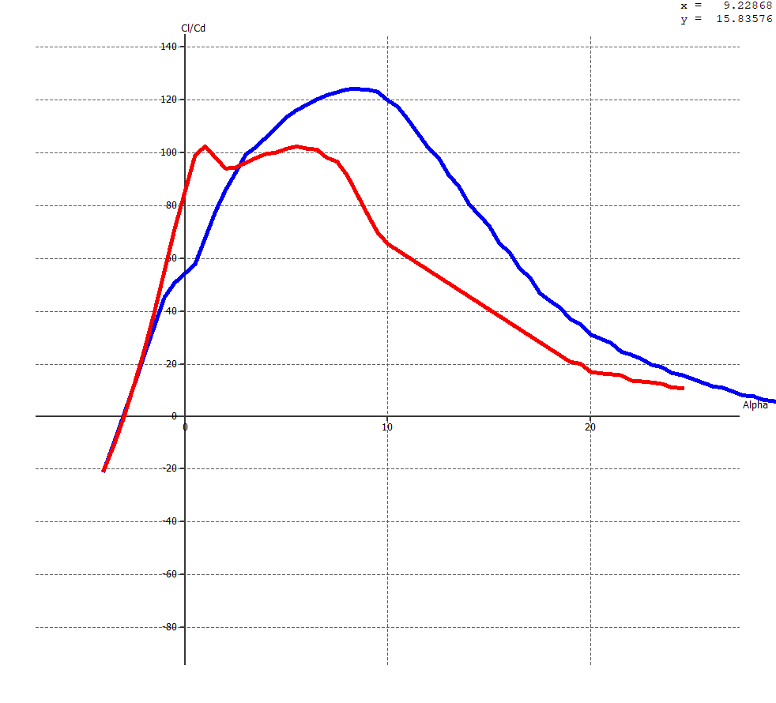
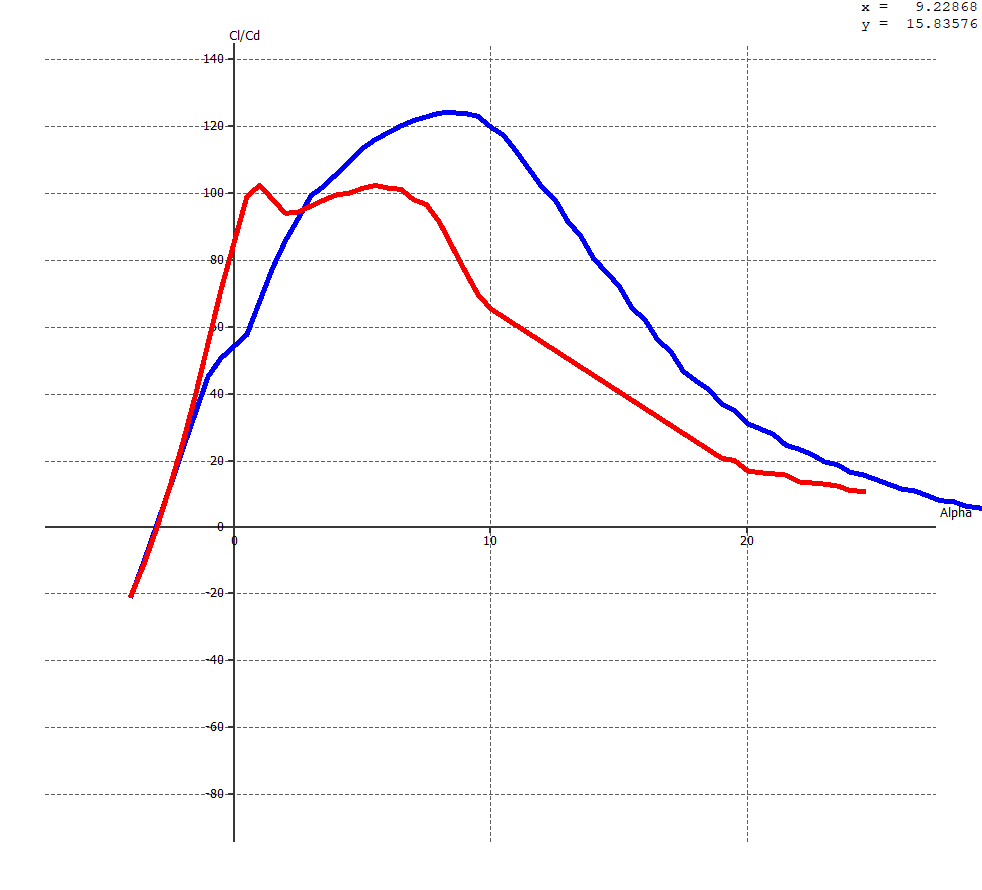
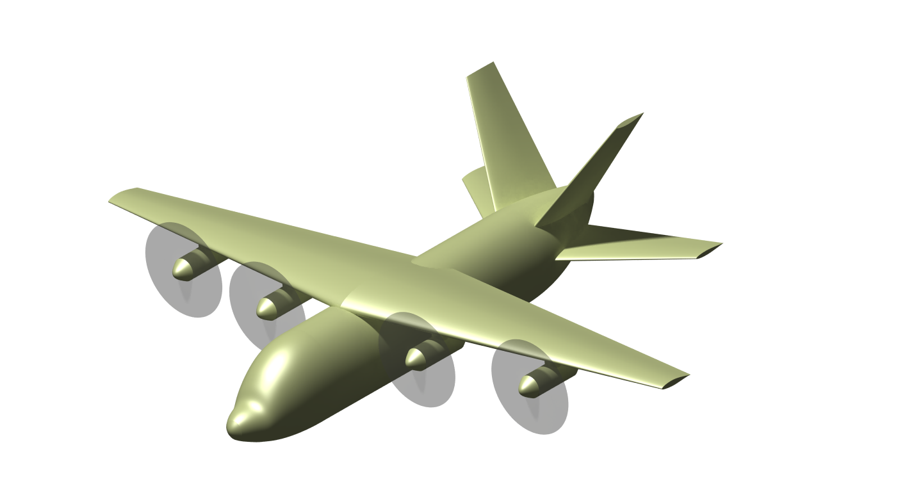
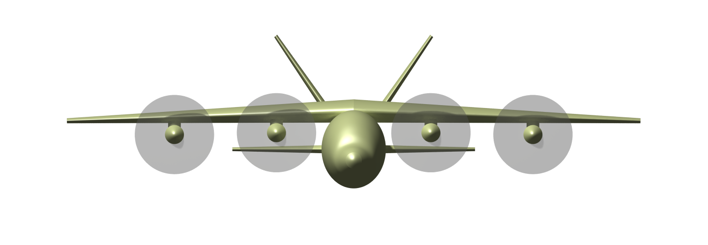
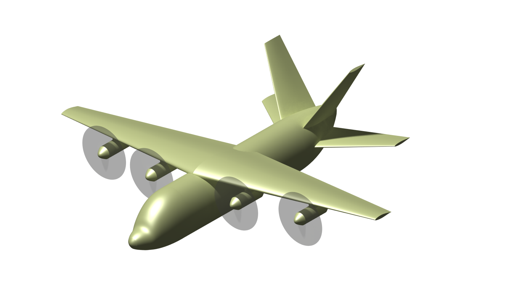
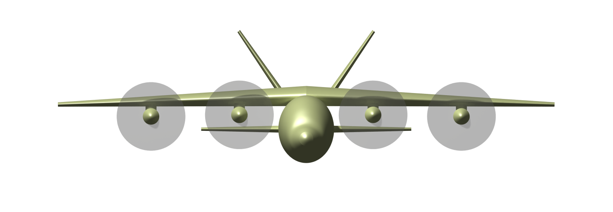

Preliminary Design of Hybrid-Electric Military Utility Aircraft
Background:
For my senior design capstone class, I lead a team that was tasked with performing the design of a hybrid-electric military utility aircraft.
The vehicle had to be capable of flight powered by just generators, just batteries or a combination of both at once.
This project allowed me to learn about the design process for an aicraft as well as apply the skills and experience from my previous 3 years of classwork.
Design Requirements:
For this project, we worked with Verdego Aero, a company that builds a variety of generators that can be used for powering hybrid-electric aircraft.
The following were the list of requirements set forth in their proposal for the team:
- Crew of 2
- Capable of Short Takeoff and Landing (STOL) of less than 500 ft
- Payload of 2000 lb, excluding the crew
- Cruise speed of 175 kts
- Capable of entering battery only flight for durations of the flight
- 20 nm cruise
- Ascent and descent
- Short takeoff and landing
- Range of 650 nm
- Use at least one Verdego Aero generator
In addition to the required design goals, the team established some items that we wanted to implement to enhance the aircraft.
Initial Weight Estimates:
The first task that I performed was obtaining an approximate initial weight of the aircraft to serve as a starting point.
Employing methodology based on historic and legacy data, I was able to obtain an approximate weight that was based off of our mission plan.
This method did not have the highest accuracy, especially since it did not account for electric propulsion systems, however it provided a point to build from.
Wing Planform Design:
After the constraint analysis was done, I was able to begin work on the initial sizing of the wing planform for our aircraft.
Using the wing loading that was found from the constraint analysis, it was possible to obtain the required wing area for our initial weight estimate.
With the wing area, it was possible to start building the wing geometry.
Besides the wing area, we had 2 additional goal geometry parameters, our aspect ratio and taper ratio.
With the goal to optimize for highly efficient cruise, we set out to try and design a wing with an aspect ratio of 10 and taper ratio of 0.3.
These goals did not last long, as we had to reduce the aspect ratio down to 8 in order to create a more reasonable wing planform.
A lot of iteration occurred using different aerodynamic analysis software, specifically XFLR5 and VSP.
The wing planform was continuously tested and iterated, with the goal trying to improve our lift distribution to make it as elliptical as possible.
Wing Airfoil Selection:
Wing airfoil selection was happening simultaneously as wing planform design.
In this process, many different airfoils were tested.
There were 3 main goals for airfoil selection:
- Thicker airfoil at the root
- More space for fuel storage
- Stronger structure
- High lift curve slope
- High efficiency
- Stall angle greater than 10 degrees
- Root:
- NACA 644-421
- Tip:
- NACA 642-415
 

[Blue - NACA 644-421] [Red - NACA 642-415]
Fuselage Design:
After the wing and tail sizing was completed, I was able to start the process of initial fuselage sizing and lofting.
This process began with defining a payload volume that would be optimal for the payload weight.
We analyzed aircraft with similar payload capacities and we decided we wanted to have a lower payload density.
This decision was driven to enable the payload to be distributed over a larger area thus more versatility.
After the payload volume was decided, I designed the cockpit to fit the 95th percentile male, as this was the next constraining factor.
Initial Outer Mold Line Design:
After all of the initial sizing finished, I went and created our initial outer mold line of the aircraft.
This served as a basis for the team to begin basic aerodynamic and stability analysis.
Additionally, it was made to be parameterized, so it could be a quick and easy method to visualize and changes that were made to the design.
 3 View Dimensioned Drawing of Aircraft

Isometric View of Iteration 1 Aircaft

Front View of Iteration 1 Aircraft
3 View Dimensioned Drawing of Aircraft

Isometric View of Iteration 1 Aircaft

Front View of Iteration 1 Aircraft
Validating Initial Weight Estimates:
After the initial sizing and outer mold line were completed, I went to validate and optimize the initial weight estimates.
Using different methods outlined in different design textbooks, I was able to use a statistical method that required different geometry parameters of the different components.
This method was favorable as it allowed for a more direct weight analysis of our specific vehicle, where we could account for the differences for our category of aircraft.
I was able to account for the weight of batteries, generators, motors and fuel more accurate and was able to better tailor the weight for the aircraft.
It was found using this method the maximum takeoff weight was about 2,500 lb less than the initial estimate accounting for all components and systems.
This method was good as it served as a validation of our previous methods as well as optimization as our aircaft was already drastically out performed by other vehicles in its class, as all of the requried systems for batteries and electric propulsion add a lot of weight.
Iterating the Design
After the first design review, some features of the design were to be changed, specifically those of the the sizing.
The fuselage extended in all dimensions, the wing area increased, and the empennage had a change from a four surface tail to a T-Tail.
With these changes, a redesign of the fuselage commenced.
Fuselage Updates
As mentioned previously, the fuselage sizing increased.
This allowed for far greater interior volume.
With this increase in the volume, the interior sizing was able to completed.
The first thing done was sizing the cockpit for two 95th percentile pilots.
The cockpit was sized in accordance with Advisory Circular 25.773-1.
While the aircraft was not to be certified under 14 CFR, regulations under 14 CFR was used if possible.

Aft of the cockpit, the generator and cargo region of the aircraft placed. The aircraft takes cargo with standard 40" x 40" cargo pallets. This enables the aircraft to have a maximum cargo volume of 304 cubic feet. The aircraft has a total of 8 pallets, arranged in two rows of four.
 Fuselage Interior Layout
Fuselage Interior Layout
The payload bay floor is lined with rollers to allow for quicker and easier movement of cargo within the aircraft. Additionally, the floor has eight removable panels that can be removed for quick and easy access to the battery storage compartment.
 Fuselage Interior Layout
Fuselage Interior Layout